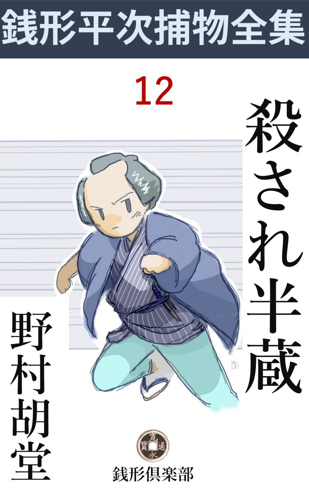
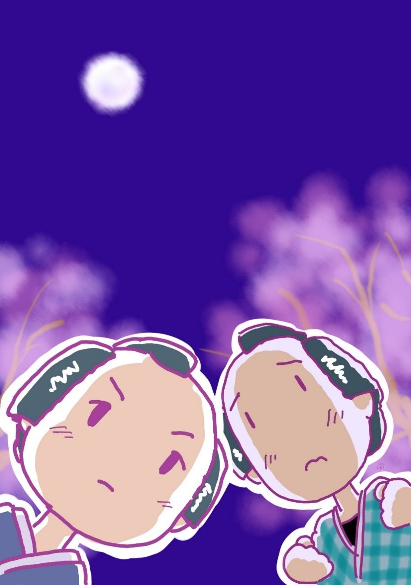

| 殺され半蔵: 銭形平次捕物全集第12話 (銭形倶楽部) | |
| 野村胡堂 | |
| ZENIGATA CLUB (2018) | |

一
「平次、少し骨の折れる仕事だが、引受けてはくれまいか」
若い与力 の笹野新三郎は、岡っ引風情の銭形平次に、こんな調子で話しかけました。
「口幅ったいことを申すようで恐れ入りますが、お頼みとあれば、どんな事でも、旦那」
先代から厄介になっている銭形の平次にしては、首をくれと言われても、断られた義理ではありません。それに平次も笹野新三郎に劣 らず、若さと覇気 と、感激性を持っていた頃のことです。
「ほかではない------、先程一人の老女が訪ねて来て、大変なことを頼んで行ったのだ」
「へエ------」
「四谷北町の小永井鉄馬殿、二百五十石を食 んで、安祥 旗本の有名な家柄だ------、その方が中風で、弟の滝三郎というのが後見をしているが、どうも面白くないことがある」
「へエ------」
「というのは、鉄馬殿は公儀へお届け済の病人、半身不随 で身動きも自由でないのを幸い、手の付けようのない放蕩者 で一時勘当までされた、弟の滝三郎父子が乗込み、兄の鉄馬殿を、土蔵の中に押し込めて、犬猫のようなひどい目に逢わせ、自分が兄の家を乗っ取って、伜文五郎に跡を継がせるつもりらしいと言うのだ」
「へエ------太 え野郎があったもので」
「私のところへ来たのは、鉄馬殿の娘浪江を、藁 のうちから育てた、加世という乳母で、用事にかこつけて、土蔵の中に入り込み、直々鉄馬殿に頼まれて、ここまで隠れてやって来たというのだ------」
「へエ------それは気の毒で御座いますが、旗本のお家騒動を、町方へ訴え出るのは、少し筋違いじゃ御座いませんか」
「その通りだ。私も旗本は若年寄の支配で、町方与力では手の出しようがないと言うと、鉄馬殿も、それは百も承知だがこれが間違って公儀の耳に入ると、小 永 井 家 は、家事不取締で断絶になる。鉄馬殿にしては、それが何より心配だ、幸い私の先代が鉄馬殿と、謡 友 達 、碁 友達という以上に懇意で、莫逆 の念いがあったから、その友情に縋 って頼みたい------とこう乳母の口から言われるのだ。弟の滝三郎は武芸も学問もないが、奸知 だけは人の三人前もあるから、何をやり出すかわからない。あとに案じられるのは、年頃になった娘の浪江、筋違いは百も承知だが、町方の手で何とかして、若年寄や、大目付の耳に入れずに、滝三郎を取って押え、私を土蔵の中から救い出してくれれば、それに越した喜びはないと言うのだ。平次、何とか工夫はないものだろうか」
全くこれは折入っての頼みでした。笹野新三郎、思わず膝を進めて、敷居の外に踞 まる平次の手を頂きたいような様子です。
「旦那、よく解りました。何とか一と工夫やって見ましょうが、相手は旗本屋敷と言うと、うっかり手は出せません。暫くお待ち下さいますように」
平次は思い定め兼ねたような、むずかしい顔を挙げました。が、------何とかやって見ましょう------と言う以上は、事件の解決まで、決して手を緩 めない平次の日頃をよく知っている新三郎は、もうすっかり大舟に乗った気持で、この捕物の名人と謳 われた男の顔を頼母 しく見詰めました。
二
しかし、この時ほど平次も縮尻 ったことはありません。手っ取り早く言えば、小永井家に入り込む工夫も何もつかぬうち、肝腎 の生証拠の老女加世は死体になってしまったのです。
それは、八丁堀の役宅に、与力笹野新三郎を訪ねた翌る日の晩でした。遽 の発作 で、町内の医者も間に合わず、息を引取ってしまいましたが、水で頭を冷したので、枕も毛もぐっしょり濡れている外、どこにも異状はなかったので、筍庵 先生の見立ては卒中ということで、深く詮索する者もなく、猫の子のように手軽に葬 られてしまいました。
もっとも、加世の伜の半蔵というのは、同じ屋敷に中間奉公をしております。これは一克 者 の母親と違って、恐ろしい道楽者、酔えば必ず大地に引っ繰り返って、サア殺せ------とわめくので『殺され半蔵』と綽名 を取った男です。母親が永年忠勤を励んだお蔭で、持て余されながらも首にもならず小永井家に飼いごろされておりますが、その日も陽のあるうちから飲み廻って、母親の死目にも逢わないという情けない有様です。
それから又幾日か経ちました。或る日、四谷の小永井家を、ひそかに見張らせている、子分のガラッ八が帰って来て、
「ネ、親分、妙な事がありますよ」
キナ臭い顔をしております。
「何だい、八」
「こんな事を言うと親分に笑われそうですが、現にこの私も聞いたんで------」
「なんだい、それは。早く言ってしまいな」
「笑っちゃいけませんよ、怪談なんですよ」
「フム、面白そうだな」
平常、怪談噺 などには、耳も傾 けない平次ですが、よくよく手掛りが欲しかったものか、不思議に乗気になって、ガラッ八を促します。
「小永井の屋敷から、毎晩女の悲鳴が聞えるって、町内は大騒ぎですよ」
「フーム」
「乳母さんが死んだばかりだから、多分お化けだろうって言いますが、誰も姿を見たわけじゃありません」
「手前も聴いたのか」
「昨夜聴きましたよ、彼れこれ亥刻 （十時）過ぎでしたが、町内の物好きな人達と一緒に、路地を入って、小永井屋敷の塀の外にいると、泣くような怨 むような、何とも言えない女の悲鳴が------」
「身振りまでしなくたっていい」
「朧 月 で、生暖かい晩、あんな声を聞かされちゃ全くたまりません」
「声の元を突き止めたかい、潜り込むとか何とかして------」
「そんなわけには行きゃしませんや、相手は旗本屋敷で、下手に潜り込んで見付かると、無礼者ッと来る」
「お化けに手討にされるのが怖かったんだろう」
「へッ、冗談でしょう」
ガラッ八をからかいながらも、平次は深々と腕を拱 きました。この間から集めた、いろいろな情報を頭の中に纏 めて見ると、何かしらそこに、捨て置き難い重大性が匂います。
「ガラッ八、今晩一つ附き合わないか」
「へエ、どこへ」
「馬鹿だなア、飲む話じゃねえ、化物退治だよ」
「へエ」
三
その晩、四谷北町の小永井家の塀の外へ行った、平次とガラッ八は、わざと町内の人目を避けて、八軒町の方から、行止りの袋路地を、屋敷の横手へ廻って見ました。
草も林も茂り合った、千坪に近い屋敷で、ここまでは手が廻らなかったか、塀も築地 も崩れて、野良犬の真似をすれば人間が潜れ込めないこともありません。
「八、ここから入るんだ」
「大丈夫ですか、親分、見付かったら百年目ですぜ」
「馬鹿だなア、相手は旗本だと思うと遠慮もあるが、当主は病人で、威勢を揮っているのは、遊芸より外には何にも知らない弟の滝三郎と、その伜 の文五郎という役者みたいな男だ。見付かったって命に拘 わるような事はあるものか」
「成程ね」
二人は小声で無駄を言いながら、寺の裏を通って、木立の奥へ深く入って行きました。物が皆んな銀鼠に見えるような、朧 の桜月夜、女の悲鳴が聞えなくとも、何となく怪談めかしい道具立です。
「親分」
「シッ」
ガラッ八は、何時の間にやら平次の袖を押えておりました。
「あれですよ、------あの声ですよ」
「------」
平次も気が付いておりました。木立の向う、屋敷の裏手のあたり、月の光が淀 んだように、青白く見えるのは、多分咲きかけた桜でしょう。丁度その中から、世にも物悲しい女の泣き声が、苦悩に引千切られながら、絶え絶えに聞えるのでした。

「親分、あれですよ」
「黙らないか、八」
言い甲斐もなく胴顫 いするガラッ八の手をふりもぎって、平次は忍び足に、その声の方へ近付きました。
「大丈夫ですか、親分」
「あれは、お化や狐なら驚きはしないが、人間だよ、------それも若い娘の声だ」
「へエ------」
二人は四つん這いにならないばかり、絶対に跫音を忍ばせて、どうやらこうやら木立の外へ出ました。
海の底のような、真珠色 の朧ろ月夜。
半開の桜の下に、ハネ釣瓶 が見えて、井桁 の下に、何やら白いものが踞 まっております。
「娘だッ、親分、あれが浪江という娘ですぜ、そりゃア美しい------」
「シッ」
耳元に囁くガラッ八を払い退けるように、平次は尚も四方 を見廻しました。
幸い木立の尽きるところから、少し廻ると物置の裏へ入って、井戸の直ぐ側まで、その庇 が延びております。
二人はもう躊躇 しませんでした。
四
「浪江、少しは懲 りたか」
庭下駄の音がして、井戸端へ物影が射します。叔父の滝三郎が、庭木戸を開けて出て来たのでしょう。
「------」
娘は泣き声を呑みました。
桜の間から落ちる月の光が、井桁 に縛られた娘の身体を、人魚のように青白く照しております。
ここまで見届けると、平次とガラッ八は、思わず庇の影に眼をそらせました。娘の身体が白々と見えたのは着物や光線のせいではなく、半裸体にされて、犇々 と荒縄に縛り上げられているためだったのです。
振り乱した髪が、美しい顔から首筋へ海藻 の如く絡 んで、真珠色の凝脂 が、ヒクヒクと荒縄の下に蠢 めく様は、言いようもない、恐ろしい魅惑 でした。
「浪江、まだ首を振るか、------わけの解らぬ奴だ」
「------」
「兄上はあの通り、明日をも知れぬ命だ。取急いで祝言の盃をし、公儀へお届を済まさなければ小永井の家に疵 が付く------、文五郎もそのつもりで、すっかり用意を整えているのに何が気に入らなくてお前は頭 を振るのだ」
五十がらみの、武士とも町人ともつかぬ男------、旗本の次男に生れて、一度はやくざに身を持ち崩したのが、中年過ぎてから武家に舞い戻って、欲ばかり深くなったと言った心持が、姿にも、顔にも言葉遣いにも現れております。
「外に言い交した男でもあると言うのか」
「------」
浪江は縛られたままに、首を振りました。
「それとも、文五郎が気に入らぬと言うのか」
「------」
今度は娘の首が真っ直ぐに起って、それを否定しようともしません。
「どうだ、浪江、返事をせぬかい」
「あの、父上様が、はっきりお許し下されば」
わななく声、涙に濡れて、苦痛に歪 められて、僅かにこう聴き取れます。
「ハッ、ハッ、ハッ、ハッ、兄上は中風でろれつも廻らない有様だ、許すも許さぬもない」
「いえ、それでも」
「馬鹿な事を言うのは、好い加減にするがいい。後見のこの叔父が言いつけるのだ、病人などを引合に出すことはない」
「------」
「どうだ、浪江、返答を聞こう。次第によっては、明日にも祝言をさせ、------いや祝言より先に、親類方の同意を得て、公儀へお届を済ませなければならぬ。異存はあるまいな」
「いえ、叔父上様、厭で御座います。父上様直々のお言葉がないうちは------」
「どうしても強情を張る気か」
「------」
「仕方があるまい。もう一と責めだ」
滝三郎はハネ釣瓶 を鳴らして、一杯くみ上げました。
「浪江、少しは涼しいぞ」
頭の上に高々と翳した釣瓶 を覆すと、颯 と銀色の滝が、娘の頭上へ------。
「アッ」
浪江は流しの板の上へ叩きのめされました。一杯の水が、処女 の全身を洗って、乱るる黒髪も、青白い身体も、紅い腰巻も、その儘湧き上りそう。
それを見ると、たまり兼ねたガラッ八。
「己れッ」
物置の闇から飛出そうとするのを、平次は大骨折で羽掻締 にしながら、
「馬鹿ッ、黙って見るんだ」
一生懸命に囁きます。
五
続いて二杯三杯。
娘は飛瀑 に打たれた女行者のように、流しの板に崩折れて声も立てずにのた打ち廻ります。荒縄に縛り上げられて、濡れた処女の肉身が、ヒクヒクと痙攣 する様は、艶 かしくも痛ましいものでしたが、五十男の欲の深そうな滝三郎には、そんな情緒が動きそうもありません。
五六杯浴びせると滝三郎は、疲れを休めるともなく、流しの上に立って、娘の顔を覗きました。
「どうだ浪江、今度は痛い目に逢うぞ」
なるほど、かねて用意をしたものか、後ろ腰から馬の鞭 を抜いて、後手に構えております。
これほどの騒ぎにも、奉公人一人顔を出さないのは、多少言い含められているのでしょう、桜の下は苦悩 に喘 ぐ娘の泣き声ばかり、町内にお化け騒ぎをさせた裏悲しさで、夜の空気に断続しております。
「浪江、まだ承知せぬな、しぶとい女だ」
滝三郎の手には、高々と鞭 が光りました。
「あッ」
一つ、二つ、処女の肉 に小気味よく鳴ると、それを切っかけのように、
「父上、暫らく」
庭木戸を押し開いて飛出した者があります。田舎芝居の二枚目と言った、顔も、身体も、瓢箪 型 の男、バタバタと庭下駄の音をさせて、井戸端へ飛付くと娘を後ろ身にかこって、立ち塞 がりました。
言う迄もなく、滝三郎の一子文五郎、妙に芝居染みますが留男振りは、兎に角すっかり板に付きます。
「邪魔立てするな」
「いえ、父上様、浪江殿が可哀そうで御座います」
「退け退け」
「打つならどうぞ、私を打って下さい」
水と鞭とに打ち挫 かれた半裸体の娘を、好ましそうに覗きながら、父の鞭から庇 って、文五郎は兎に角声を絞りました。
「えッ、聞きわけのない」
「あッ、父上様」
六
「親分、このまま黙って帰るんですか」
「そうだよ」
「あの父子に馬鹿な芝居を見せられて、指を銜 えて引下がるんですかえ」
「いやに、絡 んだ言い方だな、八」
「なに、そう言う訳じゃありませんが、あんまり業腹 だから、親分が黙って見ていて下さりゃ、あっしが飛出して、あの二人を退治した上、娘を引担いで逃げ出しますよ」
「馬鹿、あれは旗本の屋敷内に起った内緒事 だ。町方の御用聞が、そんなお節介をしたら、唯じゃ済むめえ」
「だって、親分」
「それが、平次のしたことと判って見ねえ、入知恵をした与力の笹野様をはじめ延 いては御奉行朝倉様の御迷惑になるだろう」
「------」
「それとも、旗本の屋敷へ、物盗りのように忍込んで、娘を誘拐 した罪を、手前一人で背負って立つか------」
「そんな事は、親分」
「まア、いい、時節を待て」
平次とガラッ八は、こう言いながら、表町の通りを歩いておりました。
北町、表町というと、今の赤坂ですが、昔はこの辺を一円に四ツ谷と言ったもので、江戸の切絵図 には、千駄ガ谷へかけて四ツ谷の部に入っております。
「ところで八、死んだ乳母 の伜の『殺され半蔵』というやくざ な仲間が、毎晩この辺を飲み廻っているとか言ったな」
「滝三郎が入り込んでから、誰もとがめ手がないのと、お袋が死んで少し自棄 になったんでしょう。三文賭博 を打つ元手のない時は、この辺の飲屋を門並み荒して歩いていますよ」
「そいつを探して見ようじゃないか」
「わけはありません」
二人はそれから、二三軒縄 暖簾 を漁 ると、全くわけもなく見付かってしまいました。
当の『殺され半蔵』は、とある飲屋の奥に、樽 天 神 を極め込んで、拳骨 に付けた塩を舐 めながら、湯呑で熱いのをキューとやっていたのです。
「兄 い、好い機嫌だネ」
ガラッ八は横へ廻って、ポンと肩を叩くと、
「何を言やがる、手前 が奢 った酒じゃあるめえし、好い機嫌だって悪い機嫌だって、文句を言われる覚えはねえ、すっ込んでいやがれ、丸タン棒奴」
どうも恐ろしく悪い口です。
年の頃は二十五六、顔も胸も酒に焼けておりますが、一寸苦味走った好い男、水 髪 の刷毛先 を左へ曲げて、人を睨み上げると、少し三白眼 になります。
「少し話があるんだ、すまねえが兄イ、ちょいと顔を貸してくれ」
「人に貸すような器用な面じゃねえ、退きゃあがれ、おべっかなんか使やがったって、酒は飲ませねえぞ、間抜け奴」
とても寄付けません。
黙って見ていた平次は、ガラッ八を掻き退けるように、半蔵の側へ寄りました。
幸い店の中には誰もいません。
「兄イ、小永井様の屋敷に、お化けが出るって話を知ってるかい」
「何？」
と半蔵。
「お前、それじゃ死んだお袋に済むめえぜ、桜の下の井戸端に、娘が毎晩裸 で縛られて、息も絶え絶えに責められているのも知らないようなこっちゃ------」
平次の言葉は、低いが恐ろしい効果を現しました。
「それは本当か------、お前は一体誰だ」
少し眼は据 りますが、酔いもいくらか醒めたらしく、天神様の足をほぐして屹 となります。
「誰が嘘をつくものか、破れた塀の間からもぐって、すまねえが、責め場を見て来た者があるんだ。あの儘放って置くと娘は死ぬぜ」
「フーム」
「あの悪党が、鞭 で娘を叩いたり、顔から水をぶっ掛けながら伜と夫婦 になって、この家の跡を取れと言うんだ------皆んな聴いたよ、目出度い話さ」
「------」
「従兄妹 同士の夫婦が一組出来上がって、小永井の家は千秋万歳さ、------ところで、伜があの家の跡を取ると邪魔になるのは土蔵に押し込められている年寄だ。公儀の届が済めば三日たたないうちに、軍鶏 のように締められるよ」
「そんな、そんな馬鹿な事があるものか。お前は、誰だ、畜生ッ」
「馬鹿だか馬鹿でねえか、四つの眼で見て帰ったんだ。物は試し、屋敷へ帰って井戸端を覗いて見るがいい。若い娘があられもない姿で縛られていたら、俺の言うのが本当だと思え。お主の 大事も忘れて、酒ばかり飲んで歩きゃがって万一あの娘が死んだら、手前は腹でも切らなきゃア済むめえぜ」
平次の言葉は、囁き加減ですが、噛んで含めるように、半蔵の肺腑 に喰い込んで行きました。
「畜生ッ、どうするか見やがれ」
半蔵は、湯呑を土間に叩きつけると、スックと立ち上がりました。
「急いで行って来い。二三人打ちのめしても構わないから、娘を引っ担いで来るんだぜ」
「手前達もここを動くな」
と半蔵。
「いいとも」
半蔵は外へ出ると、少しよろめく足を踏みしめて、北町の方へ、颯と飛んで行きます。
「あッ、勘定は？」
奥から飛出す親爺を、
「放って置け、勘定は俺が払ってやる」
平次は大手を拡げる形に止めました。
「親分、どんな事になりましょう」
とガラッ八。
これは半蔵の消え込んだ闇を何時までも見詰めておりました。
七
「お嬢様ッ」
井戸端で、半裸体の娘を抱き上げた時は、半蔵も、さすがに酔いが醒めてしまいました。この悩 ましい情景 は、呑んだくれの半蔵にとっても、あまりに、痛々しい刺戟 だったのです。
「お、半蔵か」
僅かに正気付いた娘は、何より先に、浅ましい自分の身体を見廻しました。が、何時の間に掛けたか紺の匂いのする絆纏 が、荒縄の上から引っ掛けられて、裾へは紅い腰巻が、月の光に、黒ずんだ濡れ色を見せております。
振り仰ぐと、抱き上げた方の半蔵が、掛け守袋 一つの逞しい裸体になり、白木綿の腹巻の後ろ帯に、木刀を叩き込んで腰を切ろうとしているところでした。
「お嬢様、気が付きましたか。何て、虐 ったらしい事をしやがるんだろう------」
半蔵はそう言いながら、絆纏に包んだ処女 を、宝物のように引っ抱えて、裏口の方へ足を移しました。
「半蔵、どこへ行くの？」
浪江は、寒さにわななきながらも、月の光に半蔵の行方をすかします。
「知れた事でさア、こんな屋敷をオン出て、安心なところへ隠して上げますよ」
「それはいけないよ半蔵、私がいなくなったら、父上様がどう遊ばすだろう。どんな事があったって私は、ここを動かない」
「飛んでもない、お嬢様があの文五郎の野郎と祝言すると、三日経たないうちに旦那様が殺されますぜ」
「えッ」
「妙な男が私にそう教えたが、どうも、こいつは図星のようだ」
「それでも、私は父上様を見捨てる気にはなれない」
「弱ったなア」
殺され半蔵も、脇の下で、縛られたまま藻掻 く娘を持て余すともなく、暫く立ち止りました。
「そんな事を言ったって、お嬢様、ここにジッとしていたら殺されるか、祝言するかだ」
「いけないよ、どうしても私を連れ出そうと言うなら大きい声を出して人を呼ぶよ」
半蔵もこの上争うわけに行きません。丁度立止ったところが土蔵の前、父親の鉄馬を閉 籠 めている場所と気が付くと、
「それでは、旦那様に伺って見ましょう、土蔵の窓は開いてるようだから」
庇の下に入って、鉄網 を張った窓から声を掛けようとすると、
「半蔵、何も彼も聞いた、娘を頼むぞ、------浪江もここを出て、時節を待て、私の事は心配するな」
厳重な鉄格子に縋 って、髯だらけの顔が半分、闇の中ながらほの見えます。
「父上様」
浪江は半蔵の小脇 に身を顫わせて、ヒタ泣きに泣き入るばかりです。
八
浪江は、半蔵と一緒に、暫く神田の平次の家に隠れました。小永井家は、旧家にしては親類も少なく、こんな時、打ち明けて力になってくれる程の人もなかったのです。
しかし、平次の目算 にも、飛んだ思惑違いがありました。浪江を盗み出して、文五郎との祝言を妨 げさえすれば、父鉄馬の命は大丈夫と思ったのは大違いで、多知 多策 の滝三郎は、
「小永井家の一人娘浪江は、乳兄妹の中間半蔵と駆け落をした」と言い触らし、半蔵や浪江を、動きの取れぬ羽目に追い込んだ上、三日経たないうちに、
------当主鉄馬は、娘の不始末を悲しむの余り卒中を起して死んだ------と発表したのでした。
間もなく、親類合議と言う形に拵え、甥 の文五郎に、跡目相続を願い出ました。その手順は如何にも疾風 迅雷 的で、相手に息もつかせません。
安祥旗本の立派な家柄と、祖先の手柄を細々と歎願書に書き添えたのですから、公儀もこれは、先ず許す方に傾くでしょう。大名と違って、旗本の死後相続は、何でもないことではあり、それに弟の滝三郎では世間が許しませんが、その伜の文五郎となると、いくらか大目に見る心持になります。
「これは放って置けない」
銭形平次も今更驚きましたが、自分の料簡一つでやった事で、この始末を笹野新三郎に持って行くわけにも行かず、又持って行ったところで、旗本の名家の相続問題に、町方与力などは嘴 を容れられるわけもありません。
半蔵も、浪江も、平次の心持や行状を見て、すっかり信頼し切っているこの頃です。今更「駄目だった」とは、平次の舌が腐 っても言われた義理ではなかったのです。
「半蔵兄 い、済まねえが一肌脱いじゃくれまいか」
事件が切迫した或る日、平次は思い入った様子で、こう言いました。
「何をやらかしゃいいんだ、親分」
半蔵もさすがに平次の緊張した顔に引入れられて、弥造 の拳骨 を出して、素直に顎を撫でます。
「兄貴 、お嬢さんや、小永井家のために、命を投げ出しちゃくれまいか」
と平次。
「へエ------」
「手っ取り早く言えば殺されて貰いたいんだ」
「なんだ、そんな事か、------殺され半蔵と言われている俺だ、自慢じゃねえが、命だけは糸目をつけねえ」
「本当か、兄貴」
「殺されつけているんだ、心配することはねえ」
冗談だか真面目だか分りませんが、ケロリとした顔には思いの外真剣な色が動く様でもあります。
「兄貴のお袋さんと、小永井の旦那は、どうも、滝三郎親子に殺されたに相違ねえが、証拠と言うものが一つもねえ。町人や百姓なら見込で縛って、引っ叩く術 もあるが、相手は旗本屋敷に住んでいちゃ、冷飯食いでも、まさかそんな手荒なことは出来ない」
「------」
「で、兄貴が乗込んで行って、平常 の術 で存分に啖呵 を切って、思い切り厭がらせを言うんだ」
「そいつは有難てえ、俺は溜飲 を下げたくてウズウズしているんだ。あの悪党親子の前でフンぞり返らしてくれるなら、命なんか二つ三つ投げ出してもいい」
「そう来るだろうと思ったよ。だが、こいつは冗談や洒落 じゃない、乗込んで啖呵を切ったら最後、間違いなく殺されるぜ」
「いいとも」
「その殺し振りを、俺は蔭 ながら見たいんだ。兄貴のお袋さんも、小永井の旦那も、卒中と言うことになっているが、二人共髪がグッショリ濡れていたって言うし、頭の天頂 には少しばかり黒血が溜っていたそうだ。どうも俺には腑に落ちないことばかりなんだ。どうして殺したか解りさえすりゃ、仇はキッと討ってやる」
「殺された上に、仇まで討って貰っちゃ済まねえな」
何と言う太平楽、半蔵はこんな事を本気で言ってケロリとしております。
「その代り、向うへ行った以上は、存分にやってくれなくちゃいけないんだぜ」
「いいとも」
殺されに行く相談を、隣の室では浪江が、袖を噛んだり、頬を押えたり、立っても坐ってもいられない様子で聴いておりました。
九
「やい、あの人殺し野郎の唐変木 はいるかい」
半蔵が小永井家の大玄関から怒鳴り込んだのは、その日の夕刻。
「あッ」
取次の用人は、半蔵の顔を見ると奥へ逃込んでしまいました。女中端女 等は、元より寄付けません。
「半蔵が逢って文句を言いに来たと言えッ。親父 の人殺し野郎と、伜の色気狂野郎を並べて置いて、土手っ腹へ風穴をあけてやるんだ」
半蔵は無人の境を行くが如く、部屋から部屋を漁 って行きました。
「俺のお袋と旦那様を殺したのは、何奴 だ、出て来ゃあがれ」
旗本屋敷には相違ありませんが、滝三郎も文五郎も無類の柔弱者で、元より半蔵ほどの者を押える気力もありません。
「まア、まア、半蔵、何をそんなに騒ぐんだ」
それでも見兼ねたか、滝三郎は笑みこぼれそうにニヤニヤしながら出て来ます。
「ヤイ、この野郎、お嬢様を水責 なんぞにしやがって、その上この家を乗っ取ろうてんだろう。侮の眼玉が黒いうちはそんな事をさせるもんか。お袋と、旦那様の仇を討ちに来たんだ、覚悟しやがれ」
半蔵は腹巻を探って、匕首 を取出すと、鼠を狙う猫のように身構えました。
「危ねえ、そんなものを抜いちゃいけない、半蔵、気を鎮 めてよく聴いてくれ、------実は、お前の来るのを待っていたんだ」
「よくよく打ち殺されたかったんだろう」
「そうじゃない、浪江に跡を取らせたいばかりに、俺はどんなに気をもんだか知れやしない。浪江の在処 さえ判れば、俺は伜を伴れて、ここを出て行く、嘘も偽りもない」
「本当か、野郎」
「浪江に悪い噂が立って、俺はどんなに心配した事だろう、小永井の家を潰しちゃ、先祖様に対して済まないから、無理な献立も、拵えたが、お前と浪江が出て来さえすれば、俺と伜は、この家に用事はない、半蔵、間違ったことをしてくれるな------」
滝三郎は真 に畢生 の弁舌を揮 いました、正直者の半蔵は、何時の間にやらそれを信用する気になって、匕首 を腹巻に納めると、ドッカと座敷の真ん中に、坐り込んでしまったものです。
十
その晩、半蔵はすっかり好い心持になってしまいました。駕籠を仕立てて、浪江を迎えにやらせるとヘエコラする滝三郎と文五郎を下目に見下 して、納戸にとぐろを巻いて、平次のことも、殺されに来たことも忘れていたのです。
「半蔵さん、お風呂は？」
顔馴染 の女中が、そう言って来ると、少し酔の廻った半蔵は、フラフラと立ち上がりました。風呂と聞くと我慢の出来ない半蔵は、少し酔っていることなどは考えていません。
雇人の風呂場ではなく、家族の風呂場へ案内されて、一度はハッと気が付いたようでしたが、すっかり好い心持になっていた半蔵は、思い直して、少し酔った身体を風呂桶の中へ漬かりました。しかし、これが重大な罠 でした。半蔵が風呂桶に全身を浸 すと、どこから現れたか滝三郎、
「どうだ半蔵、湯の加減は？」
「え、丁度いい塩梅 で------」
半分も言わせず、風呂桶の蓋 を取るとパッと半蔵の頭上へ。
「何をしやがるんだ」
飛上がろうとしたがいけません。蓋の一方の端は伜の文五郎が押えて、風呂一杯の湯の中へ、半蔵をめり込ませてしまいました。
そこへ、平次とガラッ八が飛出したことは言う迄もありません。ガラッ八が半死半生の半蔵を風呂桶から助け出す間に、平次はわけもなく滝三郎を取って押えました。人殺しの現場を押えられたのですからこれに弁解の余地もありません。
ドサクサ紛 れに、文五郎は逃げましたが、滝三郎は小永井家から人別を抜かれたままになっていたので、縄を打って、その場から引っ立てました。あとはもう話はありません。浪江には遠縁の者から婿養子を容れて、滝三郎の処刑 がすむと、祝言の盃を挙げさせました。
笹野新三郎や、平次の骨折で、家督相続も滞りなく運び何もかも目出度ずくめになってから、
「親分、いろいろお骨折で有難う御座いました。あっしは用事も済んだようだから、暫く旅に出て来ますよ」
殺され半蔵は、不意にこんな事を平次に言いました。
「どうしたんだ、新夫婦が、これから兄貴 に恩報じをしようと言う相談をしているよ」
「思召しは有難いが、こんなやくざな野郎がいちゃ目障 りだろう、------それに、あっしにしても、美しい新嫁振りを見せつけられちゃ、たまらねえ、親分止め立ては殺生だぜ」
半蔵はこう言って、クルリと背を 見せました。それっきりこの男はどこへ行ったかわかりません。人にも言えぬ淡い恋心を抱いて、酔っ払っては『サア殺せ』をやって歩いていることでしょう。
（編注）
作品中には、身体の障害や人権にかかわる、差別的な語句や表現が見られますが、本書が成立した当時の時代背景等が現代とは異なる古典的な文学作品でもあり、著者が故人でもありますので、底本のままとしました。ご理解、ご諒承のほどをお願い申し上げます。
著者---野村胡堂
挿絵---萩 柚月 © 2017
初出---「文藝春秋オール讀物號」昭和七年三月号 文藝春秋社
底本---「錢形平次捕物全集」第一巻 河出書房 昭和三十一年五月五日初版
編集・発行 銭形倶楽部